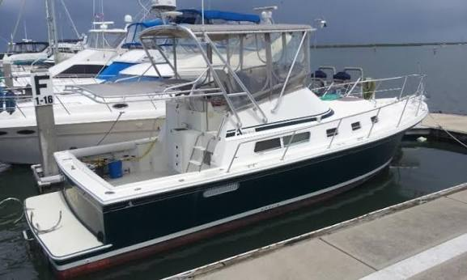

Albin 32+2 Command Bridge
1989–2003
The Albin 32+2 Command Bridge is a large modified-V cruiser whose model name understates its roughly 36-foot-9-inch overall length. It combines a command bridge, wide side decks, protected running gear, cruising accommodations and single- or twin-diesel options. The design evolved from an early Sportfisher identity into a more cruising-oriented 32+2 with major layout and deckhouse updates in the mid-1990s.

- Length
- 36.75 ft
- Beam
- 12.17 ft
- Draft
- 3.83 ft
- Hull behaviour
- Planing
- Fuel
- Diesel
- Propulsion
- Shaft
- Engine configuration
- Single or twin inboard diesel; single installations common
- Boat family
- Downeast
- Construction
- Fiberglass modified-V hull with full-length prop-protecting keel
Best for
- Cruisers wanting a command bridge with protected running gear
- Couples needing more interior volume than a compact Downeast cruiser
- Buyers comfortable with a 36-foot overall footprint
Trade-offs
- Overall size is much larger than the “32” designation suggests
- Bridge height and windage limit some routes and storage options
- V-drive installation adds service complexity
- Multiple layouts and engine packages require year-specific verification
Known concerns
- No model-specific concern has been promoted to B-Atlas’s evidence threshold. This does not mean the model has no age-, condition- or hull-specific risks.
Inspection focus
- Confirm engine installation and repower quality
- Inspect deck, cabin-top and window areas for moisture where cored
- Inspect fuel, exhaust, raw-water cooling, shaft and steering systems
- Review wiring, plumbing and owner modifications
Continue researching
Related boat models
29.92 ft · Planing
29.92 ft · Planing
35.75 ft · Semi-Displacement
40.25 ft · Semi-Displacement
31.42 ft · Semi-Displacement
37 ft · Semi-Displacement
About this record
B-Atlas preserves uncertainty: missing information remains unknown rather than being treated as a negative. Specifications and guidance describe the model record; individual boats can differ by year, equipment, refit and condition.